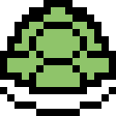
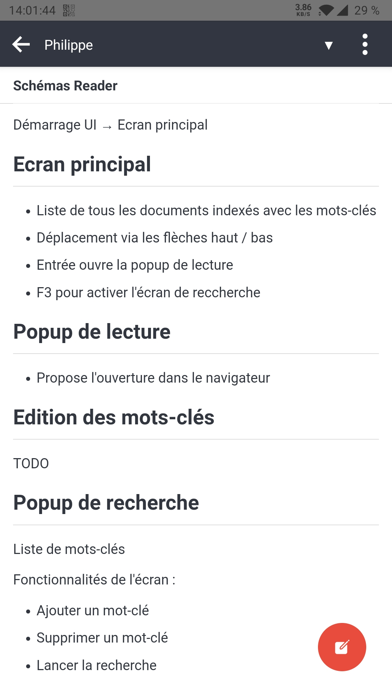

Libérez votre
prise de notes
découvrez le combo
Joplin + Mermaid

Technozaure 2020
Track 2
Pourquoi prendre des notes ?
- Se rappeler
- Favoriser l'apprentissage (Mémoire "externe")
- Garder une trace
Que note-t-on ?
- Détails techniques (urls, n° télétphone, méthodes)
- Schémas, dessins, diagrammes
- Notes de réunion / entretien
- Journal de travail
Papier ou électronique ?
Papier
🖊️ Intuitif
🔋 Pas de batterie
🎨 Dessins / Schémas
📊 Sketchs / MindMap
🔒 Facilement sécurisable
Électronique
⏲️ Plus rapide
🗚 Lisibilité
✉️ Partagé facilement
🖼️ Images
🔎 Indexé
🕑 Horodatage
⌨️ Vitesse de saisie
Solution existantes
Les plus connus
Microsoft OneNote
(Desktop Windows/MAC, Web via 365, Mobile,
Payant)
Evernote
(Mobile, Freemium)
Google Keep
(Mobile, Web, Free)
Et côté open-source ?
SimpleNote
Laverna

Turtl

Joplin
...
Difficile d'avoir une vue d'ensemble.
Joplin

Joplin
- Organisation en carnets
- Notes et Tâches
- Labels
Joplin
Joplin
- Editeur Markdown
- Mode WYSIWYG (beta)
- Plugins markdown
Multi-device
& multi-platform
Packaging unifié (mono-repo) avec clients :
Windows
Linux
(via
HomeBrew)
(cli)
Desktop
iOS
Android
Mobile
Sur Mobile

Synchronisation
Synchronisation des notes avec plusieurs services cloud
Chiffrement
Chiffrement de bout en bout (E2EE)
Des tonnes de fonctionnalités à explorer
- CSS personnalisé
- Gabarits de notes
- KaTeX
- MermaidJS
- Tables de matières
- Emojis
- Multitable
- Fountain
- ...
Qu'est-ce que MermaidJS ?
Live Démo
😀 Les Plus
- Open-source
- Synchronisation multi-device
- Chiffrement
- Multi-plateforme (Windows, macOS, Linux, Mobile, npm)
😕 Les Moins
- Pas de synchronisation Google Drive
- Pas d'autocomplétion sur les plugins
- Pas de workspaces
Questions ?
Merci

Philippe TONY
Zenika Nantes
Slides :